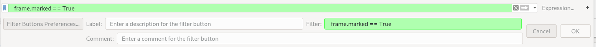
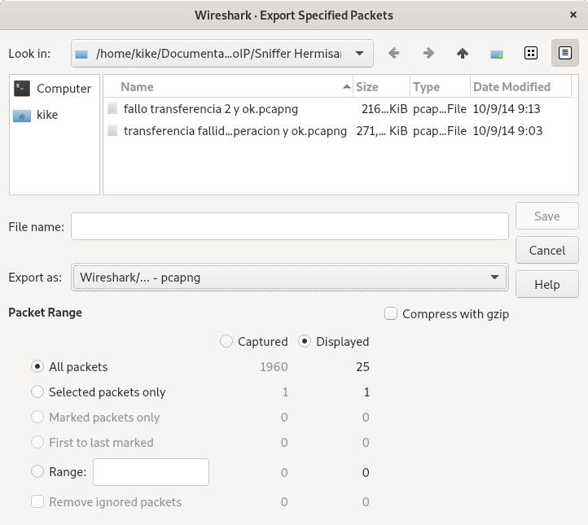

Trabajando con los paquetes capturados¶
Paquetes capturados¶
Una vez que hayamos capturado tráfico o se haya abierto un archivo de captura previamente guardado, podeos acceder a los detalles de cada paquete, seleccionando el paquete en la ventana de lista de paquetes.
Apareceran los detalles en una rama por cada nivel de red, y podremos expandir una parte del arbol de datos o el árbol completo. Si tenemos abierta la ventana de bytes, al hacer click en un elemento del árbol, se resaltarán los bytes correspondientes en la vista de bytes. También se puede seleccionar y ver detalles de un paquete mientras se está capturando tráfico en tiempo real (siempre que tengamos marcado en Preferencias -> Captura la opción Update list of packets in real time)
Podemos ver el paquete en una nueva ventana, haciendo doble click en el paquete o seleccionando con el botón derecho del ratón, la opción Show packet in new window
Tanto si seleccionamos un paquete en el listado de paquetes, en el panel de detalle de paquetes o en la cabecera de las columnas del listado de paquetes, al hacer click con el botón derecho del ratón, aparecerá un menú emergente con distintas opciones
Si pulsamos en la cabecera de columnas del listado de paquetes
Align left
Align center
Align Right
Edit Column y Column Preferences, abrimos el cuadro de diálogo para gestionar esa columna
Resize contents, cambia el tamaño de las columnas para que se ajuste a sus valores
Resolve names
Remove column, borramos esa columna del panel de listado de paquetes
Moviendonos a un paquete específico¶
Podemos saltar a un paquete desde el menú Go
Siguiente paquete
Paquete anterior
Primer paquete
Último paquete
Próximo paquete en la conversación
Pauqte anterior en la conversación
Podemos marcar paquetes en el panel lista de paquetes, este, se mostrará con fondo negro. Marcar un paquete, puede ser útil para encontarlo más tarde mientras se analiza en un archivo de captura.
Podemos marcarlo o desmarcarlo con el botón derecho al seleccionar un paquete.
Las marcas de paquetes no se almcenan en el archivo de captura y se perderan cuando el archivo de captura sea cerrado.
Podemos seleccionar los paquetes marcados con un filtro
frame.marked == True
Podemos agregar un comentario a un sólo paquete, nos aparecerá en el árbol de detalle del paquete una entrada con el comentario que hemos escrito
Nota
La capacidad de guardar comentarios en un paquete, dependerá del formato de archivo, el formato pcapng, permite guardar comentarios, el formato pcap no

Filtrado de paquetes¶
Los filtros de visualización, se aplican después de capturar datos y nos permite, mediante un potente lenguaje, construir complejas expresiones para seleccionar ciertos paquetes que cumplan con lo regla de filtrado .
Podemos seleccinar paquetes, atendiendo a:
Parámetros como la dirección IP, una red concreta, puertos, etc.
Protocolos
La presencia de un campo o un valor en un campo concreto
Condiciones como la longitud de un paquete, existencia de flags
Fenómenos como retransmisiones TCP, ACKs duplicados, etc.
Nota
La comprensión de filtros de visualización, es absolutamente esencial para el analsta de redes, aprender a construir, editar y guardar filtros de visualización, ahorrará mucho trabajo
Cualquier dato que se envíe sobre una red, puede ser filtrado y cuando se filtra, se pueden estadísticas y gráficos.
Nota
Los filtros de visualización, sólo deciden qué datos mostrar, por lo tanto, el archivo de captura aún contiene los datos originales que se capturaron. Después, se puede guardar los datos completos, o sólo los datos visualizados
A la hora de configurar filtros de visualización, podemos elegir entre varias opciones
Elegir desde el menú, los filtros guardados
Escribir la sintaxis directamente en la entrada de filtrado
Elegir un parámetro en el panel de detalle del paquete y definirlo como filtro
Construir un filtro mediante el botón Expression
En general, una cadena de filtro de visualización, se construye con una serie de expresiones unidas por operadores
[not] Expresión [and|or] [not] Expresión
ip.addr == 10.15.100.1 and sip
Tipos de campos:
Unsigned integer, se pueden expresar enteros en decimal, octal o hexadecimal
ip.len le 1500
Booleanos, un booleano es presente sólo si su valor presente en el protocolo decodificado es verdadero
# Sólo si los segmentos TCP contienen el flag SYN
tcp.flag.syn
Direcciones ethernet, 6 bytes separados por dos puntos (:), puntos (.) o guiones (-)
# Yo, siempre lo pongo así
eth.dst == ff:ff:ff:ff:ff:ff
eth.dst == ffff.ffff.ffff
eth.dst == ff-ff-ff-ff-ff-ff
Direcciones IP, también admite la notación CIDR para las redes
ip.addr == 192.168.1.10
ip.addr == 192.168.1.0/24
Cadenas de texto, se encierran entre comillas. Hay ocasiones en las que se quiere buscar una palabra en particular, el uso de contains, pued ebuscar en una trama o en el contenido de un campo. Tener en cuanta que Wireshark, es case-sensitive y soporta expresiones regulares, donde para buscar una cadena concreta, utilizamos matches
http.request.uri == "https://www.wireshark.org"
sip.To contains "@10.235.15.37"
ftp.request.arg matches "(A|a)dmin"
Slice operator, podemos seleccionar parte de un array
ets.scr[4:] == 20:20
eth.dst[0:3] == 00:Ç00:33
Operador de pertenecia, permite probar que un campo pertenece a un conjunto de valores
tcp.port in {80 443 8080}
tcp.port == 80 || tcp.port == 443 || tcp.port == 8080
# También puede contener rangos
tcp.port in {443 4410..4420}
http.request.method in {"GET" "POST"}
Funciones, disponemos de un número de funciones para convertir campos
upper y lower, forzamos coincidencias que sean case sensitive
len, devuelve la longitud de una cadena o los bytes de un campo
string, convierte un valor de campo en una cadena para utilizar operadores como matches o contains
lower(http.server) contains "apache"
len(http.request.uri) > 100
string(ip.dst) matches "^172"
Nota
Un error común, es el uso del operador != en expresiones combinadas como eth.addr, ip.addr, tcp.port, probablemente no funcione como esperamos. Wireshark, mostrará la advertencia «Puede tener resultados inesperados». Cuando queremos buscar tráfico para una dirección ip que no sea 10.10.10.10, si utilizamos ip.addr != 10.10.10.10, se debe leer como el paquete que contiene un campo ip.addr con un valor diferente a 10.10.10.10, como un datagrama ip contiene una dirección de origen y una de destino, la expresión, se evaluará como verdadera, siempre que al menos una de las dos direcciones difiera de 10.10.10.10.
Lo correcto, sería utilizar !(ip.addr == 10.10.10.10)
Ventana de filtros y menú de filtros guardados¶
Podemos escribir directamente la sintaxis del filtro en el cuadro de edición de filtros de la barra de herramientas. Cuando se teclea en el área de edición, wireshark, abre una ventana de autocompletado, para las opciones de filtrado

Cuando empezamos a escribir en el área de edición de filtros, se colorea el fondo del campo:
Color rojo, indica un error de sintaxis
Color verde, la sintaxis es correcta
Fondo amarillo, la sintaxis es correcta, pero puede obtener resuktados que no espera (uso del operador !=)
Nota
La ventana de edición de filtros, nos guarda los últimos 10 filtros utilizados
Podemos seleccionar los filtros de visualización que hemos configurado desde el menú Analyze -> Display Filters o pulsando el icono a la izquierda del cuadro de edición de filtros en la barra de herramientas. Esto, nos deslegará una ventana con los filtros que se encuentran en el archivo dfilters. Desde esta ventana, accedemos a la opción de configuración con Manage Display Filters
Este archivo, se puede editar para modificar o añadir más filtros, para ello, debemos saber en el perfil en el que nos encontramos
Seleccionando un filtro con las herramientas de Wireshark¶
Si pulsamos el botón Expression, se nos abre una ventana de diálogo, donde podemos ir construyendo el filtro a medida
Field Name. En este panel se configura el parámetro de filtro, eligiendo el protocolo y luego el parámetro.
Relation. Elegimos el operador que se ajustará al parámetro seleccionado
Value. Elegimos el valor que queremos para ese parámetro
Valores predefinidos. para los campos seleccionados (no todos los campos tienen esa ayuda).
Range. Este campo, proporciona parámetros de longitud.

También podemos seleccionar un campo en el panel de detalle del paquete y con el botón derecho definirlo como un filtro, seleccionar:
Apply as Filter, seleccionamos el factor booleano (Selected y Not Selected, que negara el parámetro)y se ejecuta el filtro
Prepare a Filter, seleccionamos el factor booleano, construimos el filtro y se queda en el campo de edición para seguir editandolo antes de ejecutarlo
# Selected
sip.Method == "INVITE"
# Not Selected
!(sip.Method == "INVITE")
Nota
Una vez que hemos seleccionado un campo en el detalle de paquete, nos aparecerá en la barra de estado la sintaxis de filtro correspondiente a ese campo
Una vez seleccionado un filtro en el cam po de edición de filtros, podemos crear un botón en la barra de herramientas seleccionado el icono [+] en la barra de herramientas. Nos aparecera un cuadro de diálogo, dónde seleccionaremos una etiqueta que defina el botón y el filtro que hemos configurado
Podemos gestionar los botones creados desde el menú Edit -> Preferences -> Filter Buttons, donde gestionaremos el archivo dfilter_buttons
Definiendo macros de filtrado¶
Las macros de filtrado, son un mecanismo para crear accesos directos a filtros complejos
# Definimos una macro llamada tcp_conv
ip.addr==$1 && ip.addr==$2 && tcp.port==$3
# Instanciamos la macro
${tcp_con:192.168.1.42;216.58.211.46;443}
Coloreando paquetes¶
Puedes configurar Wireshark para que coloree los paquetes de acuerdo con un filtro de pantalla. Esto permite resaltar paquetes que podríamos estar buscando.
Hay dos tipos de reglas de coloreado:
Reglas temporales que sólo están vigentesmhasta que se salga del programa
Reglas permanentes que se guardan en un archivo de preferencias para que estén disponibles la próxima vez que se ejecute Wireshark
Para colorear permanentemente los paquetes, seleccione del menú View -> Coloring Rules y nos aparecerá un cuadro de diálogo, dónde podremos editar, crear y eliminar reglas de coloreado, así como exportar o importar reglas en un archivo de texto
Advertencia
Estos archivos, aunque están en texto plano, no es aconsejable editarlos, ya que son creados por Wireshark con una sintaxis particular.
# DO NOT EDIT THIS FILE! It was created by Wireshark
@Bad TCP@tcp.analysis.flags && !tcp.analysis.window_update@[4626,10023,11822][63479,34695,34695]
@HSRP State Change@hsrp.state != 8 && hsrp.state != 16@[4626,10023,11822][65535,64764,40092]
@Spanning Tree Topology Change@stp.type == 0x80@[4626,10023,11822][65535,64764,40092]

En ete cuadro de diálogo, vemos las reglas de coloreado predeterminadas, deberíamos editar y ajustar las reglas, según nuestras necesidades
Si observamos, cada regla está compuesta de un literal, un color de fondo, un color de primer plano y una regla de filtrado
Nota
Por lo general, se deben enumerar las reglas más específicas antes que las reglas más generales. Por ejemplo, si tenemos una regla UDP antes que una regla DNS, la regla DNS puede que no se aplique, ya que normalmente DNS se transporta sobre UDP y está, coincidirá primero
Si estamos editando una regla, al hacer click en el botón de primer plano o background, abrirá un selector de color donde seleccionaremos los colores.
En el detalle del paquete, podemos ver una variable dónde nos dice que regla de coloreado se ha aplicado para ese paquete

Exportando paquetes¶
Wireshark proporciona varias formas y formatos para exportar paquetes de datos
Desde File -> Export Especified Packets, podemos exportar todo el archivo de captura, o sólo los paquetes visualizaos por un filtro seleccionado, en diversos formatos binarios (pcapng, pcap, snoop, etc.)
Con File -> Export Packet Dissections, podemos elegir el formato de salida como:
Texto plano, donce podemos elegir la información contenida en el archivo
Como csv
Como Arrays de C, para que pueda importar los datos de la secuencia en su propio programa de C
Como xml, en dor tipos:
PSML, formato basado en XML que sólo incluye el resúmen del paquete
PDML, en este formato basado en XML, se incluyen los detalles del paquete
Como JSON

Podemos exportar objetos a disco, por ejemplo, si seleccioamos HTTP, se pued exportar documentos HTML, imágenes, ejecutables y cualquier otro archivo transferido a través de HTTP al disco. Las columnas que nos ofrece:
Packet, el número del paquete
Hostname, el hostname del servidor
Content Type, el content type de ese objeto
Size, el tamaño del objeto en bytes
Filname, el nombre de archivo de ese objeto